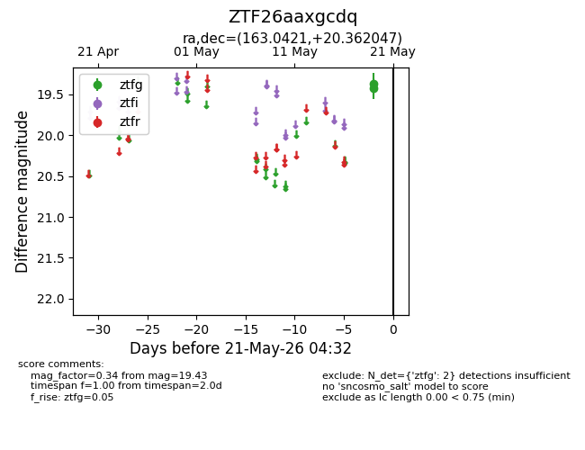
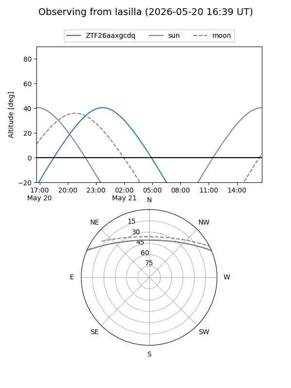
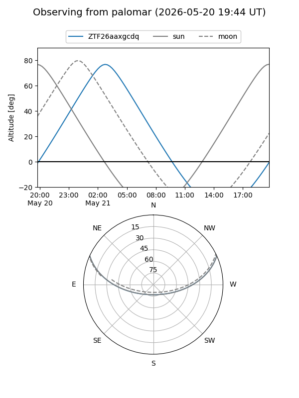

ZTF26aaxgcdq
Target ZTF26aaxgcdq at 2026-05-21 04:33
Aliases and brokers:
FINK: link
Lasair: link
ALeRCE: link
alt names
ZTF26aaxgcdq (ztf,fink_ztf)
Coordinates:
equatorial (ra, dec) = 163.0421,+20.36205
equatorial (HMS+DMS) = 10:52:10.11,+20:21:43.37
galactic (l, b) = (220.4142,+61.95471)
Flags:
Photometry:
last ztfg=19.43
2 ztfg detections
Lightcurve

Visibility


Additional plots